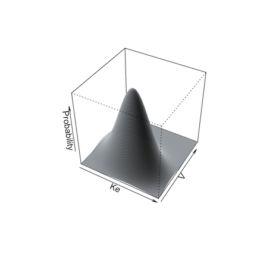
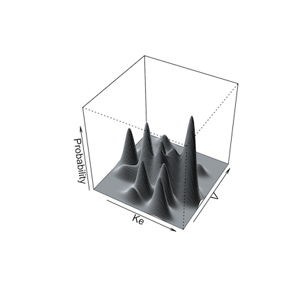

Simulation
simulation.RmdPerforming Simulations
The Pmetrics simulator is a powerful Monte Carlo engine that is smoothly integrated with Pmetrics inputs and outputs. Unlike NPAG and IT2B, it is run from within R. No batch file is created or terminal window opened. However, the actual simulator is a Fortran executable compiled and run in an OS shell.
R6
To complete a simulator run you must include data and a model object.
These can be previously loaded objects with PM_data() and
PM_model() or loaded on the fly by specifing file names of
appropriate files in the current working directory (check with
getwd() and list.files()), e.g., .csv for data
and .txt for models, at the time of simulation. The model dictates the
equations and the data file serves as the template specifying doses,
observation times, covariates, etc.
The other mandatory item is a prior probability distribution for all
random parameter values in the model. This is referenced by the
poppar argument, detailed below.
You run the simulator in two ways.
- Use the
$sim()method forPM_result()objects. This takespopparfrom thePM_result$finalfield and the model from thePM_result$modelfield, so only a data object needs to be specified at minimum. - Use
PM_sim()$run. This takes a manually specified values forpoppar,model, anddata. These can be other Pmetrics objects, or de novo, which can be useful for simulating from models reported in the literature.
Legacy
To complete a simulator run you must include the names of a data and
a model file in the working directory. The only way to run the simulator
is with SIMrun(). The poppar argument must
also be supplied.
Model and data details
The structures of the model and data objects when used by the
simulator are identical to those used by NPAG and IT2B. Of course, the
model parameters must match the parameters in the poppar
argument. Any covariates must match between model and data. The data
object contains the template dosing and observation history as well as
any covariates. Observation values (the OUT column) for EVID=0 events
can be any number; they will be replaced with the simulated values.
However, do not use -99, as this will simulate a missing value, which
might be useful if you are testing the effects of such values. A good
choice for the OUT value in the simulator data template is -1 to remind
you that it is being simulated, but this choice is optional.
You can have any number of subject records within a data object, each
with its own covariates if applicable. Each subject will cause the
simulator to run one time, generating as many simulated profiles as you
specify from each template subject. This is controlled by the
include, exclude, and nsim
arguments to the simulator (see below). The first two specify which
subjects in the data object will serve as templates for simulation. The
second specifies how many profiles are to be generated from each
included subject.
Simulation options
Details of all arguments available to modify simulations are
available by typing ?SIMrun into the R console. A few are
highlighted here.
Simulation from a non-parametric prior distribution (from NPAG) can be done in one of two ways. The first is simply to take the mean, standard deviation and covariance matrix of the distribution and perform a standard Monte Carlo simulation. The second way is what we call semi-parametric, and was devised by Goutelle et al. In this method, the non-parametric “support points” in the population model, each a vector of one value for each parameter in the model and the associated probability of that set of parameter values, serve as the mean of one multi-variate normal distribution in a multi-modal, multi-variate joint distribution. The weight of each multi-variate distribution is equal to the probability of the point. The overall population covariance matrix is divided by the number of support points and applied to each distribution for sampling.


Limits may be specified for truncated parameter ranges to avoid
extreme or inappropriately negative values. The simulator will report
values for the total number of simulated profiles needed to generate
nsim profiles within the specified limits, as well as the
means and standard deviations of the simulated parameters to check for
simulator accuracy.
Output from the simulator can be controlled by further arguments to
R6 $sim, $run or Legacy SIMrun(). If
makecsv is not missing, a .csv file with the simulated
profiles will be created with the name as specified by
makecsv; otherwise, there will be no .csv file created. If
outname is not missing, the simulated values and parameters
will be saved in a .txt file whose name is that specified by
outname; otherwise the filename will be “simout”. In either
case, integers 1 to the number of subjects will be appended to outname
or “simout”, e.g. “simout1.txt”, “simout2.txt”.
Simulation output
R6
Simulation output files (e.g. simout1.txt, simout2.txt) are
automatically read by SIMparse() and returned as the new
PM_sim object that was assigned to contain the results of
the simulation. All files will remain on the hard drive.
Legacy
Output files from the simulator can be read into R using the
SIMparse() command. Note that SIMparse() returns the parsed
output of a simulator run as a PMsim object, so use the command like
this:
simdata <- SIMparse(...)
so that simdata will contain the results. The arguments to SIMparse
are detailed in the help for the function: ?SIMparse().
NOTE: combine in R6 becomes a argument to the simulator run methods,
which is passed through to SIMparse(), since the parsing
function is no longer called by the user generally.
Plotting simulation output
R6
Output from PM_result$sim() and
PM_sim$run() is a PM_sim object. The object
can be plotted with the attached plot method: PM_sim$plot()
which in turn calls the plot.PM_sim() function. See the
help for the function and vignette("plotly") for further
details.